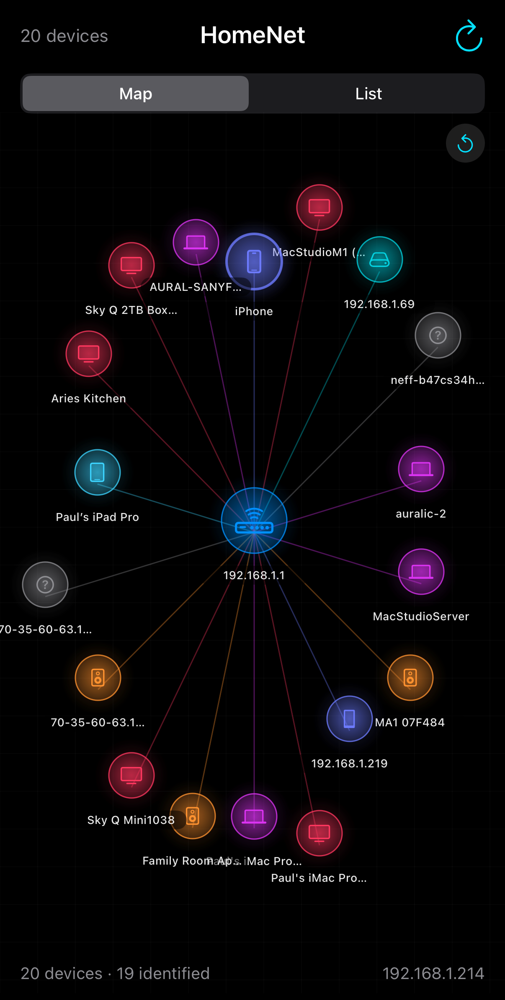

A visual home network scanner, built entirely through conversation with Claude Code
HomeNet discovers and visualises every device on your Wi-Fi network. It combines Bonjour/mDNS service discovery with TCP port scanning to find everything from iPhones and smart speakers to printers and NAS boxes, then presents them on an interactive radial map. This is the story of how it was built.

The finished app running on iPhone 16 Pro — built entirely through conversation
Building a complete network scanner app from scratch
Time for a new project. I'd love an app that shows me my home network visually, finding out as much as possible about each device it scans for. You should find computers, phones, smart speakers, media boxes, kitchen appliances etc. Use your imagination! Make it a fun project for you.
Created the entire app in one pass: 10 Swift source files, an Xcode project using file-system sync, and programmatically generated app icons. The architecture combined two discovery strategies:
NWBrowser scanning 24 service types (AirPlay, HomeKit, Chromecast, Sonos, etc.)NWConnection probing the entire /24 subnet on common portsA DeviceClassifier identifies each device using a priority chain: Bonjour services > hostname patterns >
open port fingerprints, mapping to 10 categories with distinct SF Symbol icons and colours.
iOS doesn't allow raw socket access for ARP scanning, so the app uses NWConnection TCP probes
as a portable alternative. Combined with Bonjour (which finds most Apple and smart home devices natively),
this covers the vast majority of home network devices.
Diagnosing why only one device was being found
On first deploy to a real iPhone, the app only found the phone itself. Time to investigate.
I'm only seeing my phone in the scan results. Could we figure out what's going wrong with the discovery?
Found five bugs in the scanning pipeline:
Task { @MainActor } but the timer
fired on DispatchQueue.main, so results hadn't flushed yetonDeviceFound queued MainActor tasks that hadn't executed
when identification startedNWConnections overwhelmed iOSvar resumed data race — The continuation guard flag was read/written from
multiple queues without synchronisation.waiting state ignored — Connections entering .waiting hung until timeout
instead of being treated as unreachableFixes: replaced the Bonjour timer with Task.sleep, made scanSubnet return results directly via
an actor-isolated collection, batched port probes to 25 at a time, and introduced ContinuationGate with
NSLock for safe single-resume.
When using withCheckedContinuation with NWConnection, always guard against
double-resume. The stateUpdateHandler can fire multiple state transitions, and a timeout
DispatchWorkItem adds another resume path. A simple lock-guarded boolean prevents crashes.
Making devices update live as they're identified
I'm noticing that devices don't update on screen as they're discovered. I have to switch between map and list to see the icons and names appear. Could we make all that update dynamically?
Found the root cause: NetworkDevice had a custom Equatable that only compared
ipAddress. When hostname, category, or services changed, SwiftUI thought the struct was
identical and skipped re-rendering.
Fixed by expanding equality to compare all visible properties. Also restructured the scan pipeline to classify each device immediately after its hostname and ports are resolved, rather than deferring all classification to the end.
With @Published arrays of value types, SwiftUI uses Equatable to diff elements.
A custom == that ignores mutable display properties will silently suppress UI updates. Always
include every property that affects rendering in your equality check.
Adding zoom, pan, and visual polish
Would it be possible to make the map pinchable and zoomable? The connecting lines are also hard to see in dark mode — could we try solid lines? And the labels are overlapping nearby icons, so a bit more spacing would be great.
Rewrote the map layout to support gestures and better spacing:
MagnificationGestureWhen combining MagnificationGesture and DragGesture, use
.simultaneousGesture for the drag so both can be active at once. Track
lastScale/lastOffset separately from current values to handle
gesture continuation correctly.
57 tests covering classification, models, and progressive updates
How about adding some tests too? It would be great to simulate the async order things happen in and make sure the classification pipeline works correctly.
Added three test suites using Swift Testing (@Test, #expect):
All 57 tests pass. The progressive update tests specifically verify the Equatable fix —
that enriching a device changes its equality, which is what triggers SwiftUI to re-render.
Testing network scanning logic without a real network is straightforward when you extract
DeviceClassifier.classify() as a pure static method with explicit parameters. The tests
inject hostnames, services, and ports directly, verifying classification logic without touching
NWBrowser or NWConnection.
Keeping devices well-spaced as they update
The devices start nicely spread out, but when they update and get classified, they all collapse together. Could we fix that? There's also a lot more vertical room we could be using on a portrait screen.
Rewrote computePositions with two key changes:
GeometryReader,
using geo.size.width * 0.42 and geo.size.height * 0.42 to fill the
portrait screen vertically2π/count), with only subtle radius variation
by category (0.70–1.0). When a device gets classified, its angle stays the same —
only the radius shifts slightly inwardThe previous ring-based layout had devices jumping from an outer ring (0.95) to a much smaller inner ring (0.35) when classified, dramatically shrinking the available circumference and causing visual collapse.
When building progressive-update UIs, position stability matters as much as visual design. If a layout algorithm depends on data that changes over time (like device category), positions will jump unpredictably. The fix is to base positions on stable properties (array index) and let only secondary visual properties (radius) respond to data changes.
HTTP headers, SSH banners, and UPnP discovery
I said have fun with this! Could we go further? When you find a device, how about poking at it on standard ports and protocols — HTTP on 80 and 443, maybe other protocols — to see if any more info can be gleaned?
Created a DeviceProber actor that interrogates each discovered device after the initial scan:
SSH-2.0-OpenSSH_8.9p1 Ubuntu)Probe results are stored as [ProbeEntry] on each device, displayed in a
“Discovered Info” section in the detail view, and fed into the classifier for reclassification.
I'm only getting 4 devices now — the extra probing work is probably making the scan time out. Could we make all the new work asynchronous, so the diagram can update before probing comes back?
Split the pipeline into two phases:
Task after the scan
declares completion. Each batch of 4 devices is probed in parallel, with results updating the UI
progressively as they arriveThe map now shows a small orange spinner during probing, and device labels, categories, and detail views update in real time as probe data arrives — without blocking the initial scan results.
When adding a slow enrichment step to a progressive-update pipeline, always run it as an independent
Task rather than tacking it onto the end of the scan. The user sees the map immediately with
basic info, and then each device “fills in” with manufacturer names, model numbers, and
reclassified categories as the probes complete. This pattern — fast coarse results first, slow rich
results layered on top — works well for any multi-phase discovery system.
AirPlay info, Chromecast details, latency measurement, Apple model IDs
Can you think of any other interrogation we could do? Maybe for certain recognised devices like iPhones, Apple TVs, media devices? Also do we get hop counts? Can I see if any of these devices are traversing WiFi or wired networks? Really anything you can think of that would be interesting to a technically-minded user!
Added several new interrogation layers:
model, am,
osvers, deviceid, and more from mDNS metadata. Apple model identifiers
like MacBookPro18,1 or AppleTV6,2 enable precise classification before
any probing starts/info — Fetches binary/XML plist from port 7000
containing model identifier, firmware version, MAC address, and AirPlay version/setup/eureka_info — JSON endpoint on port 8008
revealing device name, model, manufacturer, firmware, WiFi SSID, signal strength, noise level,
and ethernet connection statusContinuousClock to time
TCP connections as a proxy for connection type: <5ms suggests wired, 5–30ms WiFi,
>50ms multi-hop or remoteThe classifier now checks TXT record model IDs first — before even looking at service types — giving the most precise classification possible for Apple devices.
Bonjour TXT records are an underused goldmine. Most Apple devices broadcast their hardware model
identifier, OS version, and device ID via mDNS — you just have to know which keys to probe.
Using NWBrowser.Result.metadata with getEntry(for:) is cleaner than
trying to iterate the entire TXT record. The model-first classification means a HomePod is correctly
identified as a speaker even before its hostname is resolved.
Diagnosing why the map showed IP addresses instead of friendly names
We were diagnosing why IP addresses don't get replaced by Bonjour names on the map pane. We just ran with a lot of logging enabled…
The logs revealed two distinct problems:
NWBrowser instances failed with
DNSServiceBrowse failed: NoAuth (-65555). The Info.plist was missing
NSBonjourServices (the array of service types) and NSLocalNetworkUsageDescription
(the permission prompt string). Without these, iOS blocks all mDNS browsing silentlydisplayName property only checked for
UPnP friendly names (source == "UPnP"), missing AirPlay and Chromecast probe results that
also return device names. A Mac Studio discovered via AirPlay /info as
“MacStudioServer” was still showing its raw IP on the mapFixes: added all 24 Bonjour service types to Info.plist, broadened displayName to use
any probe result with label == "Name", updated the status bar to show “identified”
count (hostname, services, or probes) instead of just “probed”, and made diagnostic logging
opt-in via a verbose flag.
With Bonjour working, a new problem emerged: the same device appeared as two or three map nodes.
RAOP (AirPlay Audio) service names include a hex MAC prefix (D0817AD9AF37@Paul's iMac Pro)
that prevented matching. And when mDNS resolution failed, unmatched Bonjour entries created phantom
devices with fake bonjour- IP addresses.
The fix: stripBonjourHexPrefix() normalises RAOP names throughout the pipeline, services
are merged (not replaced) when multiple Bonjour names match the same device, unresolvable Bonjour entries
are dropped instead of creating phantoms, and a final deduplicateByIP() pass merges any
remaining duplicates by combining their services, ports, and probe results.
iOS Bonjour permissions are a two-part requirement that fails silently. You need both
NSLocalNetworkUsageDescription (for the user-facing permission prompt) and
NSBonjourServices (declaring every service type you browse) in Info.plist. Missing either
one causes NWBrowser to fail with a cryptic NoAuth error — no crash,
no permission dialog, just zero results. Always check the system log for -65555 if
Bonjour returns empty.
When merging discovery sources, use the device’s real IP address as the deduplication key — it’s the one stable identifier across Bonjour browsing, port scanning, and hostname resolution. Bonjour service names vary by protocol (RAOP adds a hex prefix, mDNS uses the user-set name, etc.), so name matching alone will always miss some duplicates.
When deduplication goes horribly wrong
I'm still seeing duplicate Mac Studios on the map. Could we add deduplication by IP address after all the matching?
Added a deduplicateByIP() pass that merged devices sharing the same IP address,
combining their services, ports, and probe results. It worked perfectly — except for one
catastrophic edge case.
Bonjour-only devices that couldn’t be resolved to a real IP were being created with a
placeholder IP of "unknown". Ten completely unrelated devices — Paul’s
iMac Pro, two Sky Q boxes, two MacStudioM1 instances, an Aries Kitchen speaker, an Auralic streamer,
and two Apple TVs — all ended up with ip=unknown. The dedup logic then gleefully
merged them all into a single Frankenstein device with 9 services from 10 different physical devices.
The fix was simple: skip "unknown" IPs during deduplication. But the deeper issue was
that name matching was failing for most devices because:
.lan suffix ignored — hostnames like macstudiom1-7.lan
weren’t having .lan stripped, only .local-7 to hostnames
when multiple devices share a name, but Bonjour uses instance numbers like (920)MacStudioM1 (920) didn’t match
macstudiom1-7 because neither “contained” the other after normalisationThe solution was a proper normaliseName() function that strips domain suffixes
(.lan, .local, .home.arpa), parenthesised instance numbers,
DNS disambiguation suffixes, hex RAOP prefixes, apostrophes, and dashes — reducing both
macstudiom1-7.lan and MacStudioM1 (920) to the same canonical form:
macstudiom1.
Deduplication on a placeholder value is a landmine. If multiple unrelated items share a
default/sentinel value (like "unknown" or ""), any dedup logic that
keys on that field will silently merge them into one. Always exclude sentinel values from
dedup keys. And when matching names across different naming systems (DNS hostnames vs Bonjour
service names vs mDNS names), normalise aggressively — every system adds its own suffixes,
prefixes, and disambiguation patterns that prevent naive string comparison from working.
“Since we've had quite a few iterations, I wonder if it would be worth going through the code and cleaning up any inefficiencies, refactoring where necessary to prevent code duplication, and commenting everything well. Could we also make sure the test coverage is comprehensive?”
A comprehensive audit identified six categories of cleanup across all source files:
categoryColor()
and nodeColor computed properties in NetworkMapView, DeviceNode, DeviceListView,
DeviceRow, and DeviceDetailView with a single DeviceCategory.swiftUIColor propertyContinuationGate / ProberContinuationGate class;
merged into one shared ContinuationGatecleanHostname() — domain suffix stripping
(.local, .lan, .home.arpa) was done inline in 4 places
with inconsistent coverage; now a single shared function used by displayName and
the ViewModel’s name matchingFoundIPs actor (unused since streaming
refactor), X-Frame-Options header block (read but never used), unused label
field from BonjourBrowser.serviceTypesmergeServices() inside deduplicateByIP() —
replaced inline service dedup with the existing helper methoddisplayName — hostname fallback now strips
.lan and .home.arpa suffixes, not just .localTests grew from 114 to 119 with new cleanHostname() coverage and updated assertions
for the improved hostname stripping.
After several rapid feature iterations, technical debt accumulates in small ways — a colour switch duplicated across five views, a helper function that should exist but doesn’t, inline logic that diverges from the canonical version. A systematic audit pass catches these before they become maintenance headaches. The key is to search for patterns across the whole codebase, not just the file you’re editing.